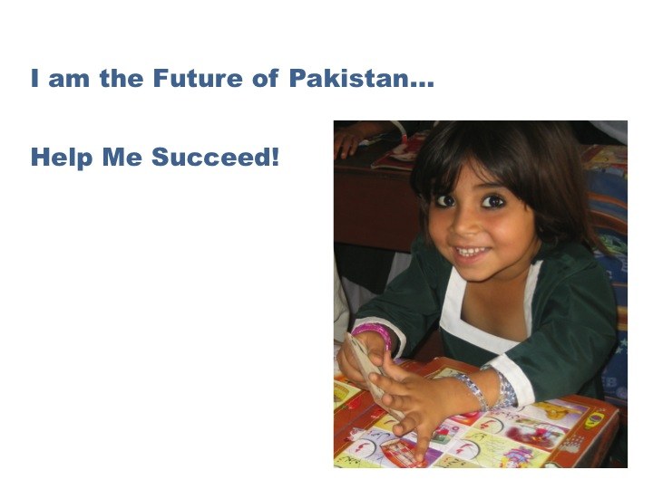

|
DIL Schools In Pakistan - Promotional Video
Produced by: Manjusha Films
Director/Camera/Editor: Hemal Trivedi
Location: Pakistan
Year: 2010
Length: 8:49
In rural Pakistan DIL modern schools are bringing hope
and opportunity to underprivileged Pakistani children.
This film chronicles a day in life of children studying
at DIL schools in rural Islamabad and looks at how their
lives are transformed through education. For more
information please visit DIL's website:
dil.org .
|